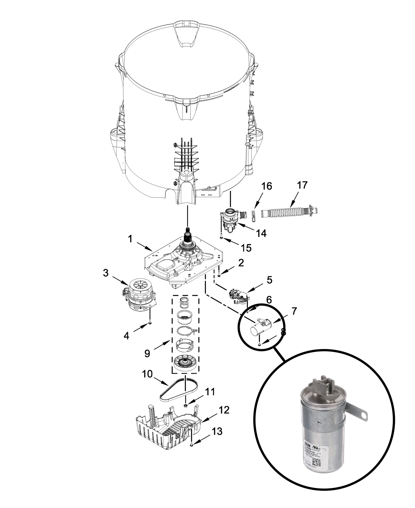
Where the Capacitor Fits in the Whirlpool Drive System
The supplied WTW5057LW0 gearcase, motor and pump diagram shows the capacitor as item 7, near the motor and belt-driven assembly beneath the tub. The highlighted detail connects the diagram to the component replaced during this Fishers repair.
This story follows a specific service visit: the basket would not spin and the agitator would not move. Diagnosis identified a failed capacitor, and replacement restored operation without replacing the drive motor.
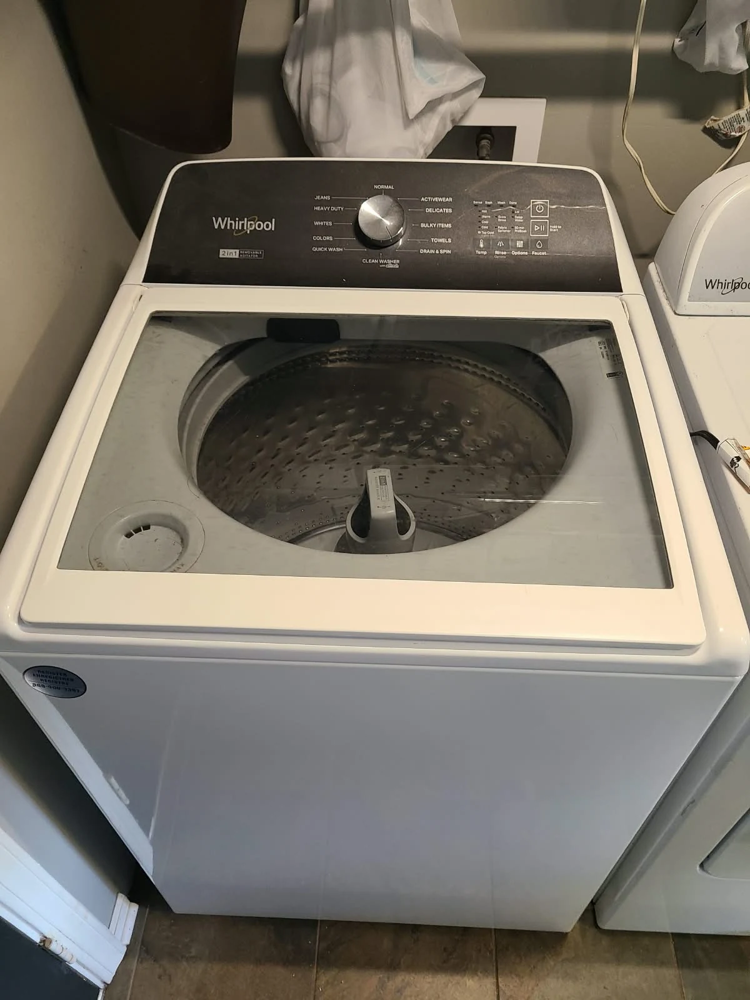
The Call: A Washer That Would Not Spin or Agitate
The customer in Fishers, Indiana reported that the washing machine was not working: neither the basket nor the agitator would rotate. Alex Appliance Repair visited the home to diagnose the Whirlpool top-load washer.
Instead of treating the symptom as proof of a failed motor or gearcase, we diagnosed the appliance and identified the capacitor as the component that needed replacement. The service photos below document access, component testing, replacement and reassembly.
Confirming the Model: Whirlpool WTW5057LW0
The original appliance label confirms Whirlpool WTW5057LW0. The model-number area is reproduced here from the actual photograph, without recreating the label.
When requesting Whirlpool washer repair in Fishers, include the complete model number, including its final digit. Also explain whether the problem occurs during washing, spinning or both. For this machine, both basket rotation and agitation were affected.
Accessing the Motor, Belt and Capacitor
The first photograph shows the protective drive cover. With access opened for service, the next view shows the drive motor, belt and large pulley. These photographs establish the location of the parts involved; they do not indicate that the belt or motor was replaced.
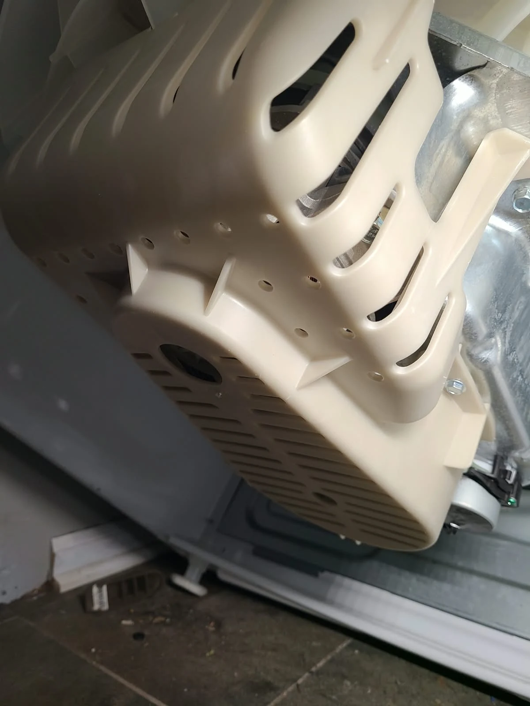
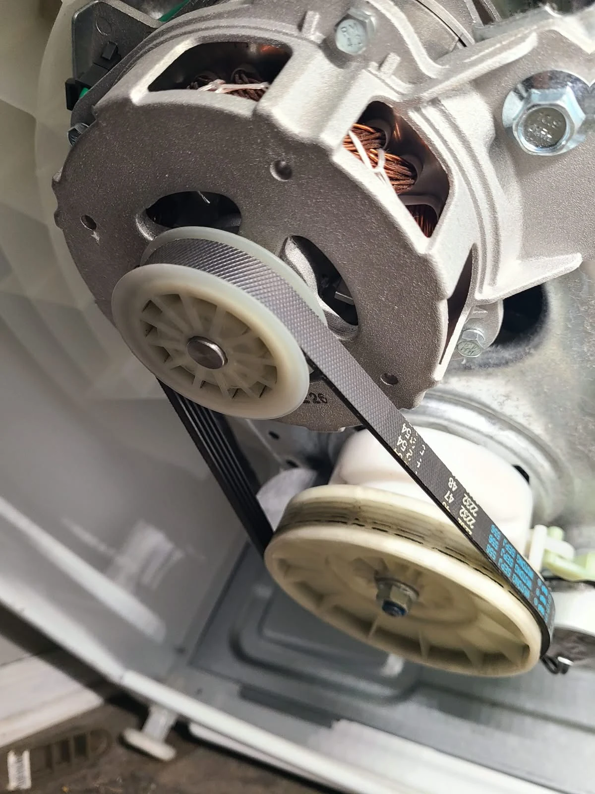
Finding the Failed Motor Capacitor
The original capacitor was mounted beside the drive assembly. During diagnosis, we found that it had lost capacitance and the motor could not develop the starting torque needed to begin normal operation. That explains why both washing action and spinning were affected in this case.
The close-ups show the capacitor before replacement and the access available with the lower pulley removed. The confirmed repair was capacitor replacement, not a gearcase, agitator or drive-motor replacement.
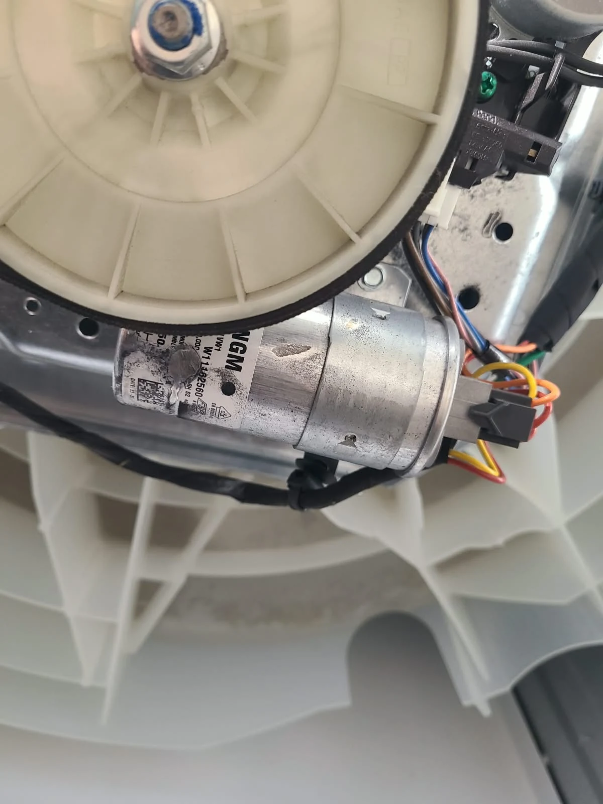
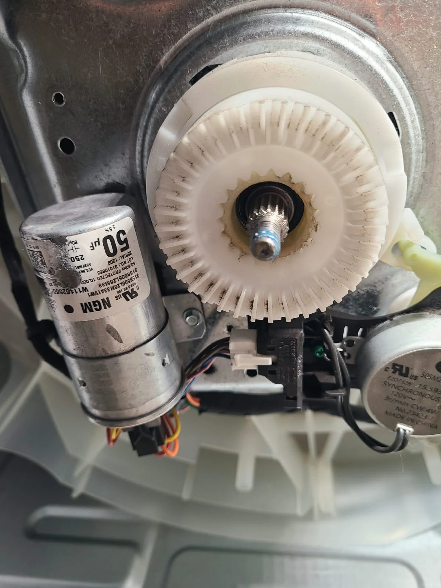
Capacitance Testing: 0.0 Compared With 50.1 Microfarads
The diagnostic photographs show a clear difference. The meter displays 0.0 µF with the removed failed capacitor connected, while the replacement measurement displays 50.1 µF. The photographed capacitors are marked 50 µF.
These readings support the technician's finding that the original capacitor had lost capacitance. The replacement measurement is close to its marked nominal value. The images document this particular repair; they are not a recommendation to order a capacitor solely from a similar-looking washer or a symptom.
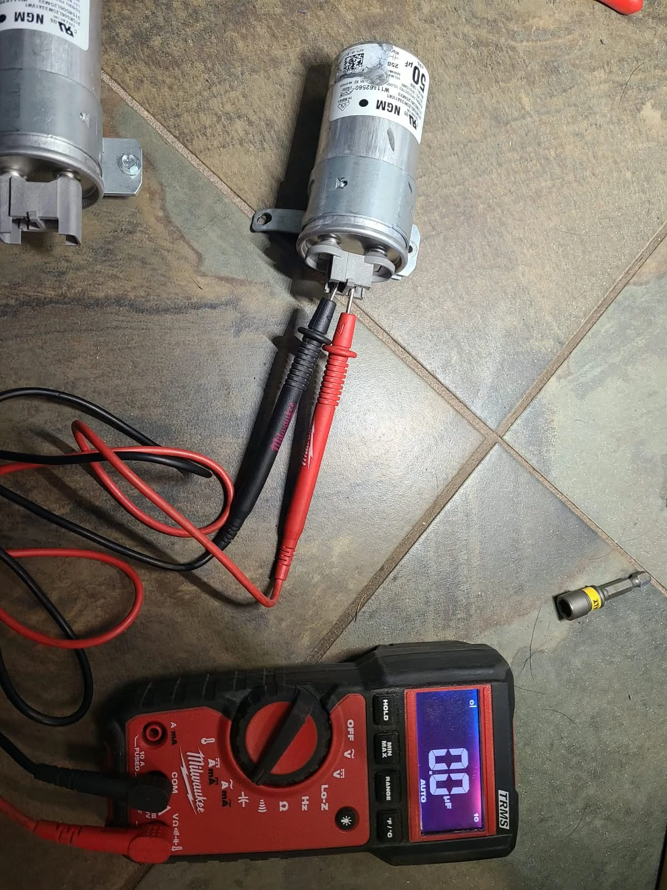
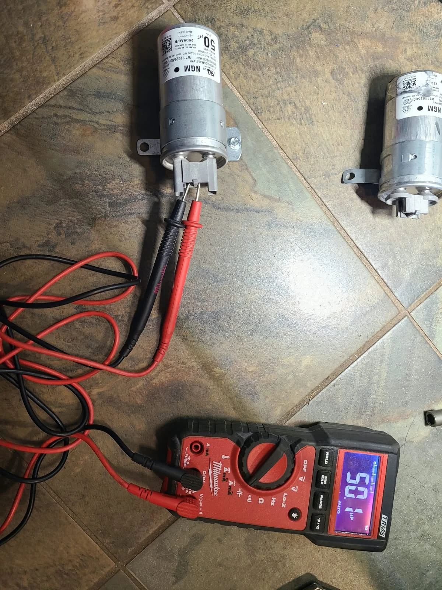
Replacing the Capacitor
The side-by-side photograph shows the old capacitor on the left and the replacement on the right. The second image documents the capacitor and Whirlpool parts packaging from the visit. We removed the failed component and installed the replacement in the washer.
Physical appearance alone was not the basis for this diagnosis. The loss of capacitance, the motor-starting problem and the successful operational checks after replacement are the important findings in this repair record.
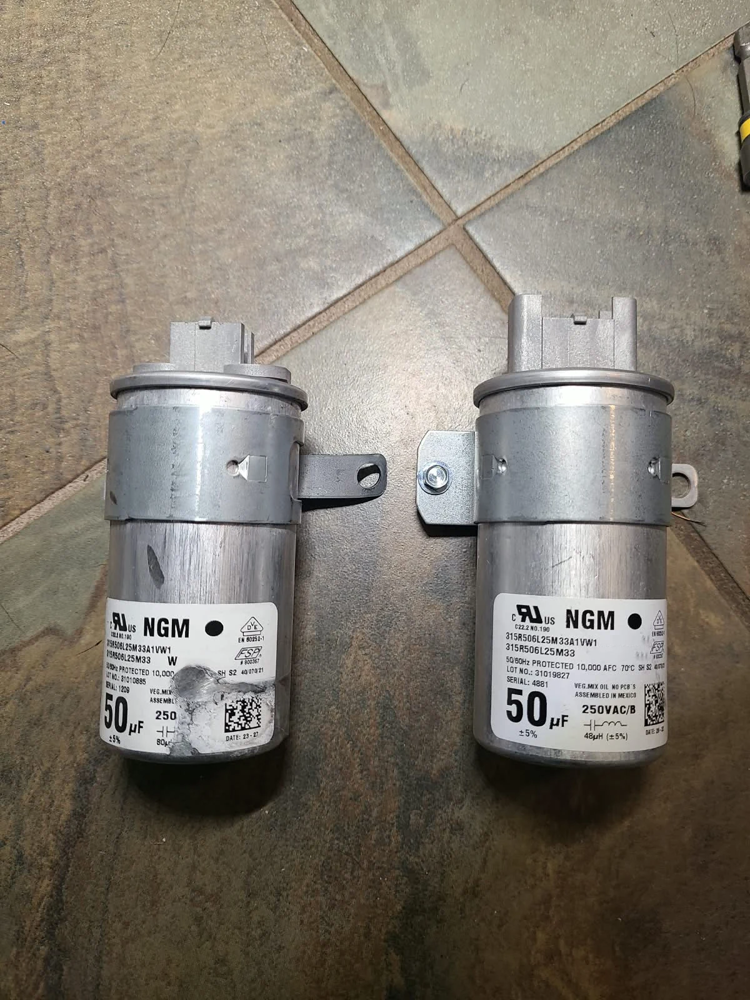
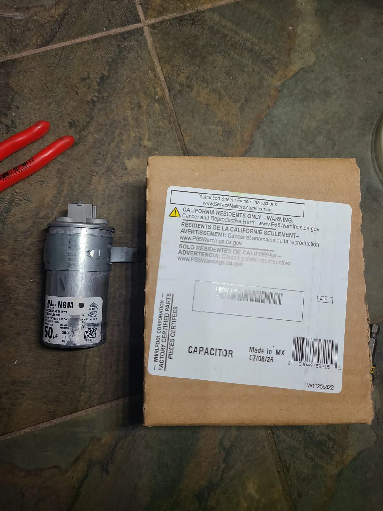
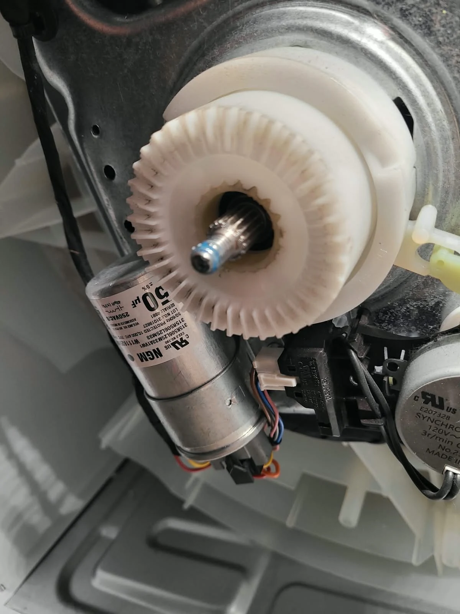
Installing the Replacement and Reassembling the Drive
The replacement capacitor was installed and connected in the drive area. The photograph shows the new component in place while the assembly was still open for service.
We then reassembled the parts removed for access. The motor and belt drive remained part of the existing washer; the component replaced to address this failure was the capacitor.
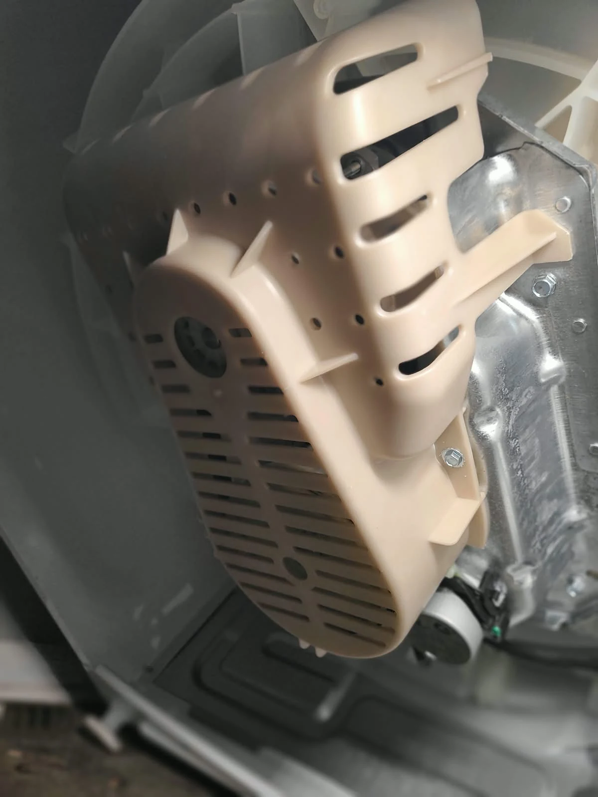
Final Checks: Rinse and Spin and Wash Cycle
After reassembly, we tested the washer on Rinse and Spin and also tested a Wash Cycle. The checks confirmed that the machine could spin and perform its washing action again.
The cover photograph documents the reassembly stage, not a running-cycle test. The completed operational testing is the technician-reported result of this Fishers visit. The Whirlpool WTW5057LW0 returned to working order after capacitor replacement.
Whirlpool Washer Not Spinning: Common Questions
Can a failed capacitor stop both spinning and agitation?
In this documented WTW5057LW0 repair, yes. The failed capacitor prevented proper motor starting, so neither the basket nor agitator operated normally. Replacing it restored both functions during the post-repair tests.
Does every Whirlpool washer that will not spin need a capacitor?
No. A no-spin complaint does not identify one particular failed part. The appliance needs diagnosis before a replacement is recommended. This article describes a confirmed capacitor failure on one washer, not a universal fix.
Was the motor replaced?
No. The repair documented here was replacement of the failed capacitor. The washer was reassembled and tested on Rinse and Spin and a Wash Cycle.
What should I send when booking washer repair in Fishers?
Share the full model number, your service address and a description of what the washer does. Mention whether the basket will not spin, the agitator will not move, or both. Include any displayed error code without guessing its meaning.
How much does washer capacitor replacement cost?
The estimate depends on the diagnosis, the correct replacement component and the work required. We explain the findings and estimate before approved repair work.
Schedule Whirlpool Washer Repair in Fishers, Indiana
For a Whirlpool washing machine that will not spin or agitate, Alex Appliance Repair offers washer repair in Fishers. We approach each repair with care, explain the work performed and check the appliance after service.
Explore our appliance repair services in Fishers, Indiana, Whirlpool appliance repair and washing machine repair services. More documented service visits are available in our repair story gallery.
Alex Appliance Repair is an independent appliance repair service operated by Aksenov LLC. Call (463) 248-8429 with your model and symptoms, or book an appointment online.
Book washer repair in Fishers